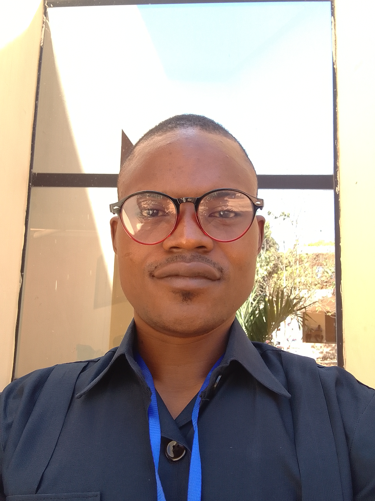

Fungal conservation & diversity
Documenting and conserving fungal diversity in Sub-Saharan Africa, with a focus on ectomycorrhizal and termite-associated fungi.

Research Assistant & Data Analyst
Laboratory of Tropical Mycology and Soil–Plant–Fungi Interaction
Faculty of Agronomy, University of Parakou, Benin
I am a forest scientist and mycologist working on fungal conservation and biodiversity in Sub-Saharan Africa. My research combines field inventories, molecular data, and statistical modelling to understand the distribution, diversity, and ecological roles of fungi, particularly ectomycorrhizal and termite-associated species, in tropical forest and savanna ecosystems.
Documenting and conserving fungal diversity in Sub-Saharan Africa, with a focus on ectomycorrhizal and termite-associated fungi.
Tree–fungus interactions, ectomycorrhizal networks, and their functional effects on tree growth and forest dynamics.
Leveraging local beliefs and traditional knowledge to strengthen community-based conservation of edible fungi (e.g. Termitomyces).
Sampling frameworks, structural equation modelling (SEM), and reproducible analysis for ecological and agronomic research.
Using airborne fungal DNA to reveal spatial and seasonal dynamics of fungal communities at large scales.
Local perceptions of plant and fungal resources and their spatiotemporal dynamics in tropical landscapes.
Field and laboratory work across West and Central Africa.
Monts Kouffé–Wari Maro National Park, University of Parakou research plots, and community forests. Focus on Termitomyces and ectomycorrhizal fungi.
Lubero cool highlands, North Kivu. Ethnobotanical and ecological studies of Oldeania alpina (African bamboo) and associated fungi.
Contributions to the Global Spore Sampling Project and the Sub-Saharan Africa fungal database.
Full list on Google Scholar and ORCID.
Open resources and reproducible workflows.
Email: apollonrossi@gmail.com
Address: Parakou, Benin
Laboratory: Laboratory of Tropical Mycology and Soil–Plant–Fungi Interaction,
Faculty of Agronomy, University of Parakou